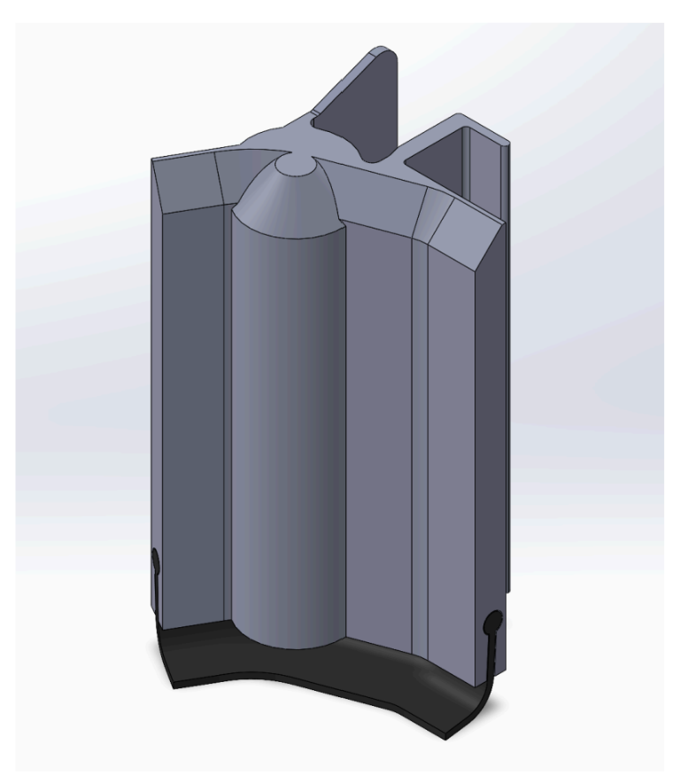
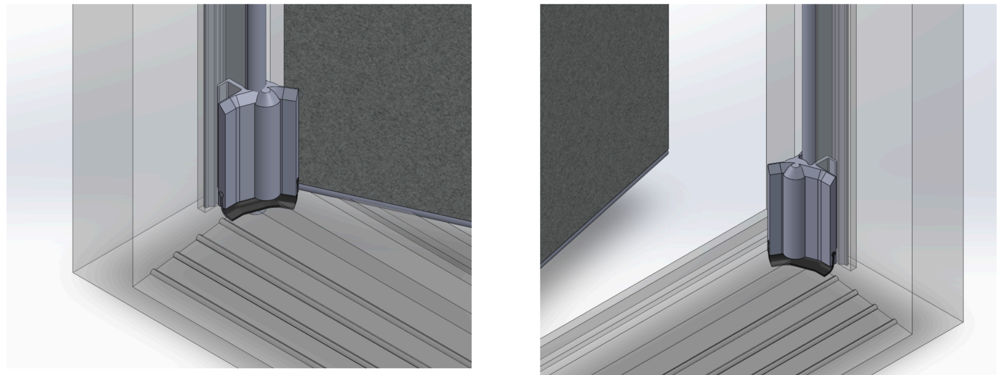
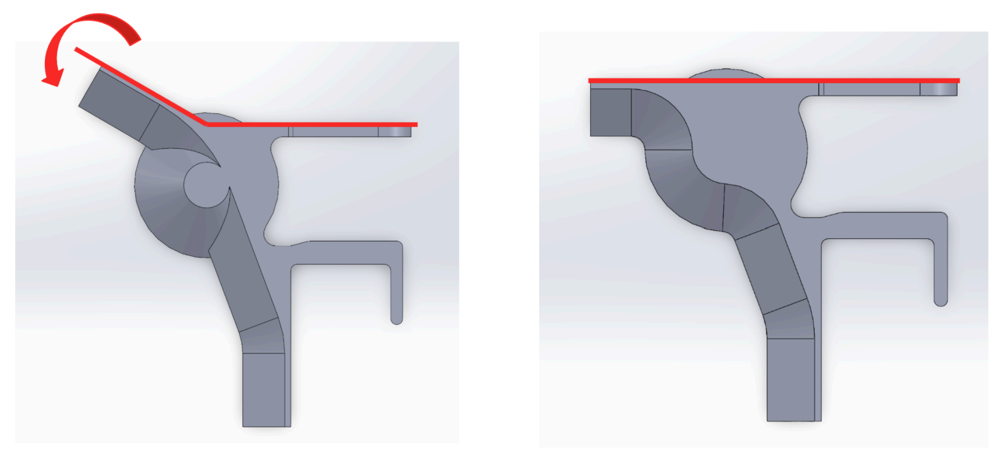

On-frame Corner Seal

Overview
Designed a corner sealing device for residential doors that stops air and water from leaking through the bottom corners, a long-standing weak point in existing weatherstripping products. Worked through the full design process: researching materials, iterating prototypes, testing performance, and costing out the system for manufacturing.
What I did
- Researched and compared candidate materials (PVC, HDPE, PP, rubber) based on water resistance, flexibility, and cost.
- Iterated through 10 SolidWorks design versions, moving from a bulky multi-part concept to a two-piece part that mounts onto the door's weatherstripping instead of the door panel or frame.
- Designed six integrated features into the final part, including a flexible flange that wraps around the door when closed and a tool-free alignment hook for installation.
- Built a water penetration test rig calibrated to industry (ASTM E1105) flow rates and benchmarked the prototype against five commercial competitors.
- Ran a failure mode analysis (FMEA) and reviewed the design against Canadian and international building code standards.
- Achieved 36 minutes of average water resistance versus 12.6 minutes for the best competing product, while meeting cost and tool-free installation targets.
Design

The corner seal installed on the door's weatherstripping at the bottom corner of the frame.

Top view of the flexible flange, open (left) and wrapped around the door when closed (right).
Tools
SolidWorks, material selection, experimental test design, FMEA, cost analysis